The bookshelf.
50+ books and counting. each one earns a single honest takeaway, not a review
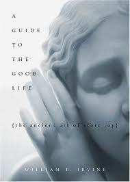
A Guide to the Good Life
currently reading · the takeaway lands when the last page does 📖
Unscripted
This was a gem. Not just being a cog in the machine, but made me think how can I own the machine. And, gave some pretty cool perspective on life and values
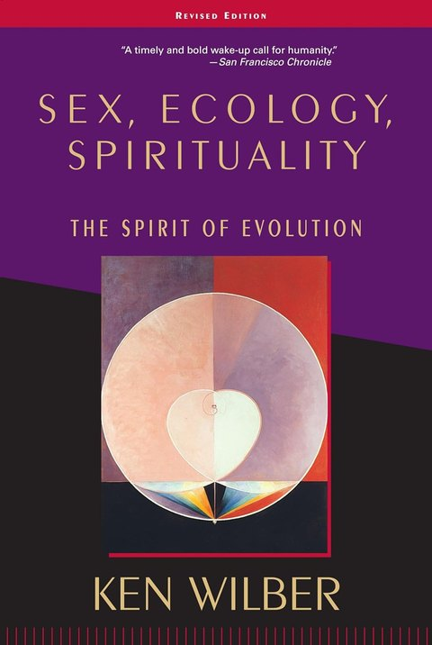
Sex, Ecology, Spirituality
to be finished · set aside for now, back to it soon 📖
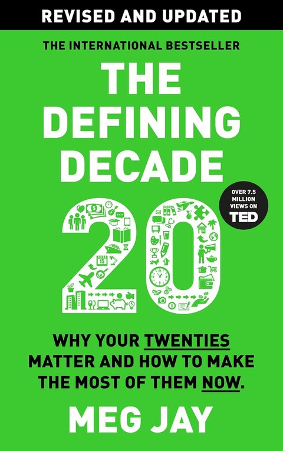
The Defining Decade
We think it's too late to change. Meg says the 20s are exactly the right age to choose your partner, lifestyle, work and happiness. Glad I read it inside mine
Spies, Lies, and Cybercrime
Wow, scary how vulnerable we all are in this online world. Big fan of Bitwarden after this!
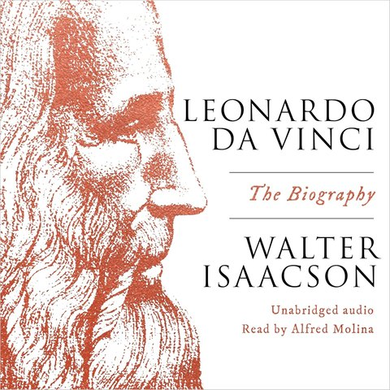
Leonardo Da Vinci
One of my absolute favourite picks! Engineer, architect, artist, surgeon... the list goes on. Proof of how far curiosity and flow state can push one human. Anything is possible
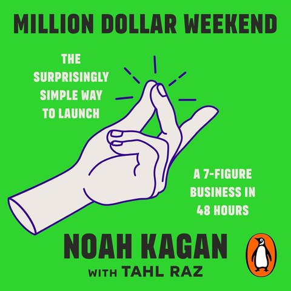
Million Dollar Weekend
Main idea: find a paying customer, take a deposit, then start building. Your idea gets validated, accountability gets created, and Action > Idea stops being a quote
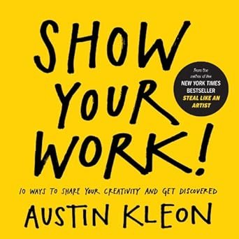
Show Your Work!
Quick read. Core takeaway: why are you hiding work you've already put the effort into? Push it into the world. Build credibility, trust and an audience
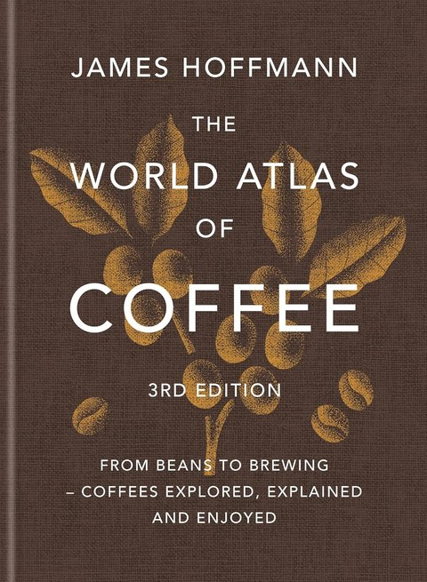
The World Atlas of Coffee
Singapore and my curiosity got the best of me. One weekend, cover to cover, just to understand what coffee people are actually into. Learned an Americano is just espresso with hot water, named for the Americans in Italy who kept asking for it that way
The World for Sale
Crazy read! Loved every page. The earth's resources are traded daily behind closed doors by people most of us have never heard of, quietly steering the geopolitics of the world. HIGHLY RECOMMENDED!
The Four Agreements
still re-reading my notes on this one - the takeaway is coming
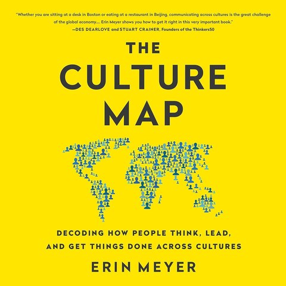
Culture Map
We're all more or less the same humans everywhere. What makes us unique is culture and its nuances. Essential for anyone planning a global career and leading global teams. Someone like me
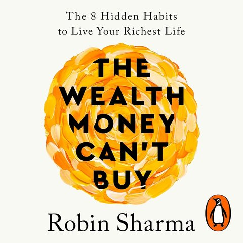
The Wealth Money Can't Buy
A good weekend read. The teachings may feel obvious, but it's a solid collection of what actually makes a human the richest in life
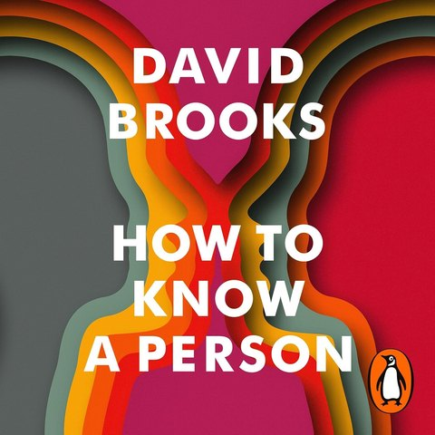
How to Know a Person
Look deeper at people. Make them feel heard, make them included. And don't wait for the right moment to know someone better. Every person has a story to tell. I always try to know that story
Taxtopia
Curiosity about how taxation works led me here, and boy, was I shocked and left in awe. Taxes stay complex and jargon-filled for a reason: if everyone understood and started asking questions, the world's gonna be a mayhem
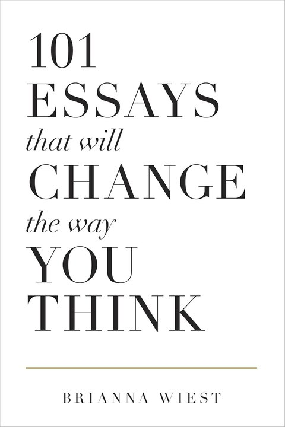
101 Essays That Will Change The Way You Think
Another gem. Biggest takeaway: most of our suffering comes not from our circumstances, but from the way we've been taught to interpret them
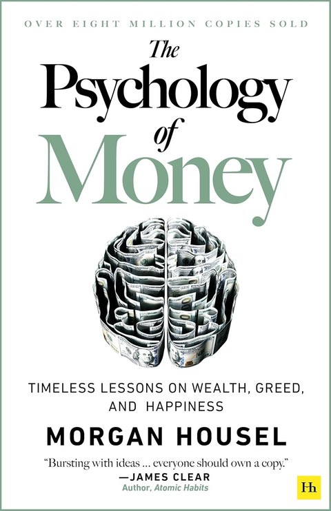
The Psychology of Money
It's the small decisions and the discipline that keep people broke, or quietly build them
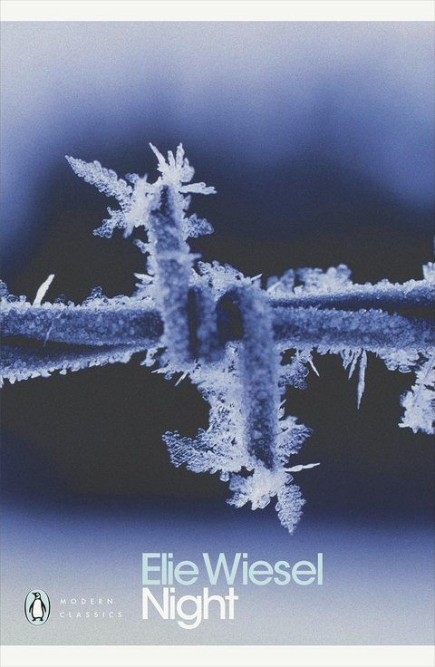
Night
Reinforced the power of hope for survival, and to cherish the life I've been gifted. Death is destined for every one of us, but only a few muster the courage to make the most of it
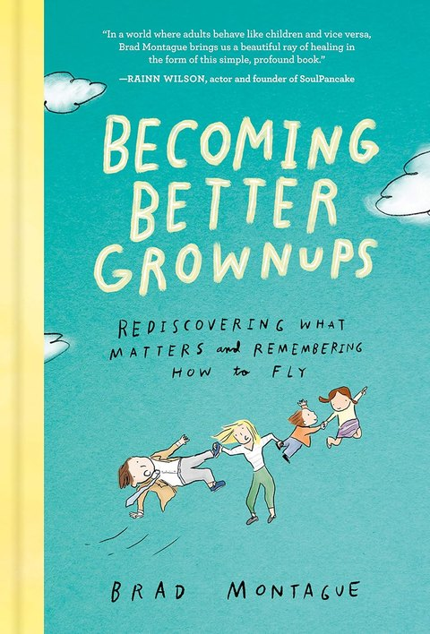
Becoming Better Grownups
Don't let the mundaneness of adult life get to me. Keep the curiosity of a kid: take risks, see more of the world, appreciate the little things
Meditations
My Bible. My most recommended book, period. The private ruminations of the most powerful man of his time, never meant to be published. Every excuse for vice was available to him, and he chose purpose over everything. Memento mori: remember death
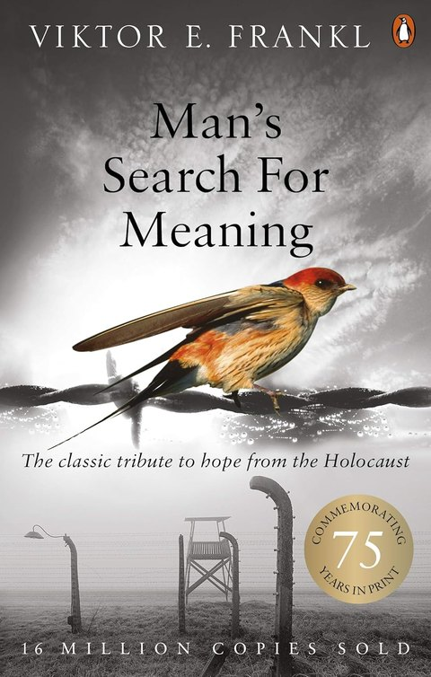
Man's Search For Meaning
One of the books that changed my life. The suffering I used to complain about was nothing compared to what people endured in the Holocaust. And still, hope survived. My condolences to every soul who lived those times. My whole POV on life changed after this
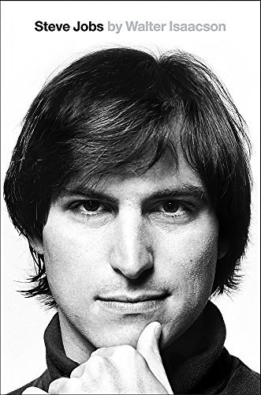
Steve Jobs
Invention, I learned, isn't only a matter of technical skill. The real magic happens where engineering meets creativity, taste and art. That intersection is exactly where Jobs chose to stand
Elon Musk
The lesson that stuck: find something you're genuinely passionate about, hold a vision bigger than feels reasonable, and push yourself past every limit to reach it, no matter what it takes
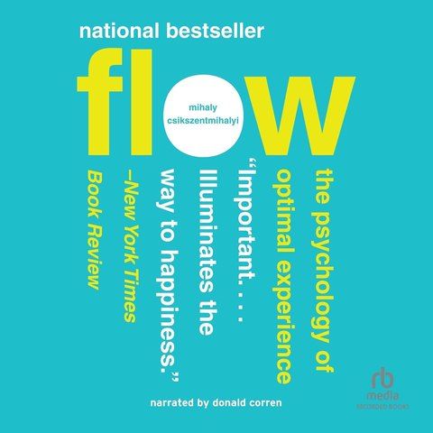
Flow
still re-reading my notes on this one - the takeaway is coming
Can't Hurt Me
Helped me push myself harder, in personal life and professional life alike
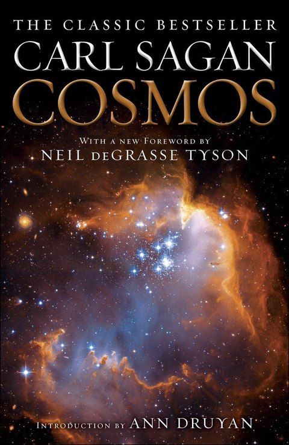
Cosmos
Made me fall in love with space. Cosmic insignificance: race, colour, religion, caste, all man-made. We're not that significant in this vast universe anyway, so take more risks and explore
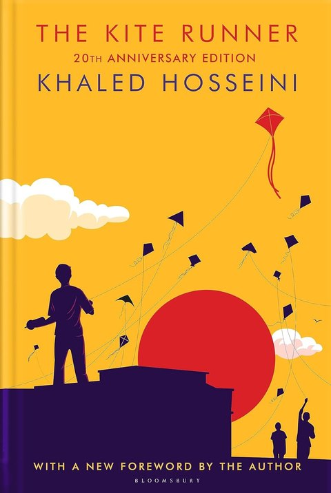
The Kite Runner
The book that instilled in my teenage world the idea of seeing more of it. Go travel
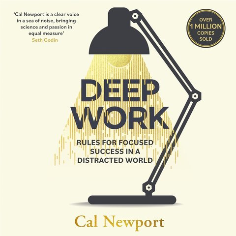
Deep Work
My first step into conscious digital consumption. The algorithms are not your friends, and the ability to FOCUS is what will set one apart
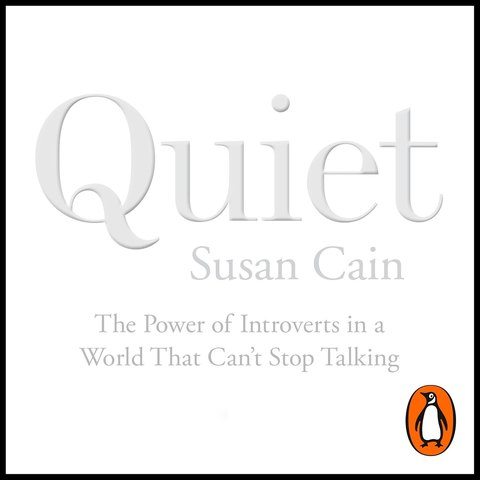
Quiet
One of the books that changed my life, found at exactly the right time. Late teens, still trying to understand myself and my personality. That's where I met the word ambivert. I guess I am one
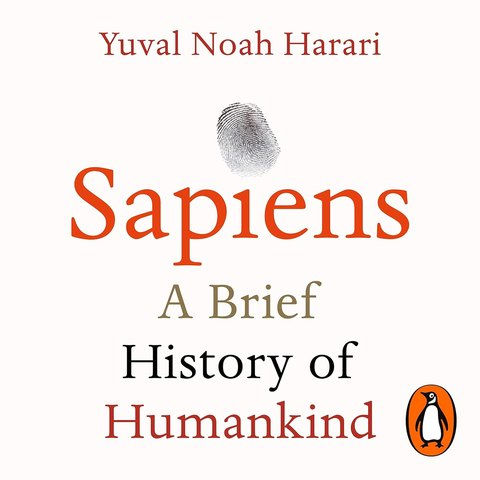
Sapiens
Came into my life right when I was asking the existential questions: who am I? why are we here? Sure, I'm here today, but how did we get here? Our lifespans are a blink against Earth's origins
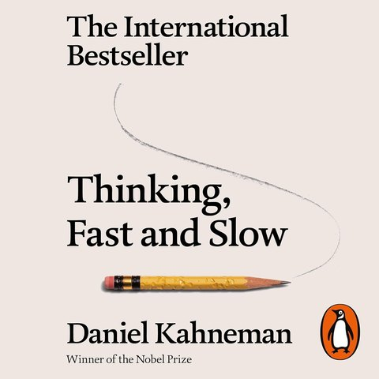
Thinking, Fast and Slow
This book rewired my brain, how I perceive the world and every interaction in it. It exposed how vulnerable our minds are to bias. I now consciously catch myself, daily
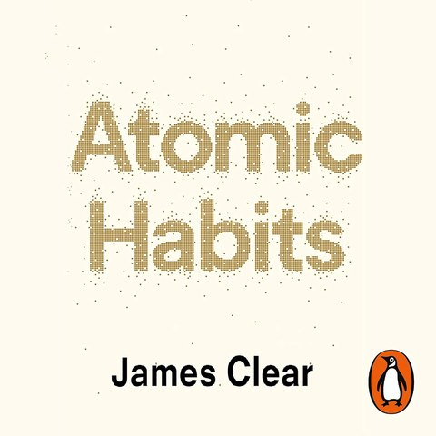
Atomic Habits
The power of consistency. Small actions, compounding over time
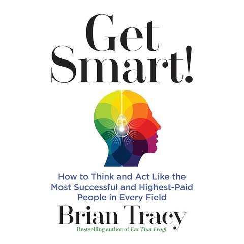
Get Smart!
My first ever book! Found by pure chance, back when I didn't even know how a library worked. It opened my mind to endless possibilities. And teenage me believed every single word
✦ Ask AI about me